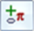

Create a watermark
Watermarks are created using the same techniques, command bar options, and Properties dialog box as the text boxes created with the Text command.
-
Select the Watermark command
 located under the Home tab→Annotation group→Text list.
located under the Home tab→Annotation group→Text list.If the Watermark command is not available, go to the Solid Edge Options dialog box, and on the View tab, make sure the Show watermarks in Draft environment check box is selected.
-
On the Watermark command bar, set options for text size, color, alignment, rotation, and other properties.
-
Do one of the following:
-
To place a watermark as a text box, click+drag to define the location and size of the text box. The text box appears as an outlined box.
-
To place a watermark as a text string, click the location in the drawing where you want the text to start. The cursor appears in the place where you can start typing text.
Tip:-
If you click and drag to draw the text box initially, then the watermark is defined as a fixed-width text box. You can adjust the size interactively using the handles displayed when you click the text box.

You also can change the text box size using the Fixed Width box and the Height box on the Info tab (Watermark Properties dialog box).
-
If you click and type to begin entering content, then the text box is defined as Fit width to contents. Sizing handles are not displayed on the text box when you select it. You can change this behavior using the Text Control option on the command bar.
-
-
Type text in the text box or where the text string begins.
-
Insert a copyright symbol or any variety of characters—On the command bar, click

Insert Symbols, Characters, or Property Text→Insert Character to open the Character Map dialog box. To learn how to do this, see Insert a font character into a text box. -
Rotate the watermark to a 45 degree angle—On the command bar, click Properties , and then on the Info tab in the Watermark Properties dialog box, in the Angle box, type the desired angle of rotation.
To create the watermark shown here:

You can create superscript, subscript, fractions, bullet and numbered lists, and indented paragraphs.
-
Use the Stack dialog box to specify the content and formatting of superscript, subscript, and fractions.
Use the AutoStack dialog box to apply fractional formatting to numbers and symbols as you type.
To learn how, see Format a fraction, superscript, or subscript.
-
You can control list numbering using the options on the Bullets and Numbering menu
 on the Text command bar. These include:
on the Text command bar. These include:-
Continue Numbering
-
Restart Numbering
-